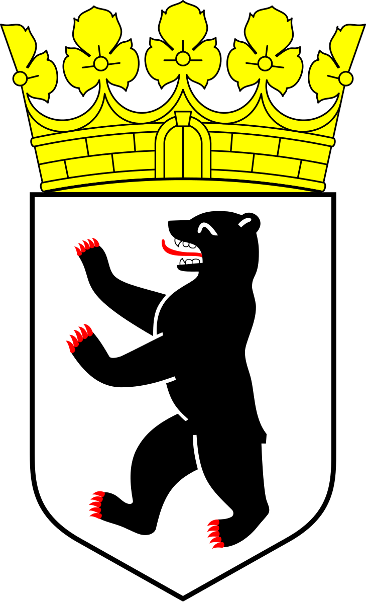

Deutschland kurz |
Berlin |
Land und Leute |
Sehenswürdigkeiten |
Staat und Bundesländer |
Galerie |
|
Die große Stadt Gesichter hat Die große Welt in einem Zelt Viele Arten, Menschen, Rassen Menschen, die sich lieben, hassen Menschen, die sich gut versteh´n oder auseinander geh´n |
Menschen die Familien gründen oder andere Menschen finden Menschen in der Einsamkeit denn die große Welt ist weit Menschen aus der großen Welt finden hier ihr Familienzelt Menschen prägen diese Stadt die so viele Gesichter hat |
Aufgabe. Lesen Sie und übersetzen Sie den Text. Beantworten Sie die Fragen. Machen Sie weitere Aufgaben.
Berlin ist die Hauptstadt der Bundesrepublik Deutschland. Es ist ein wichtiges Industrie,- Verkehrs,- Wissenschafts – und Kulturzentrum Deutschlands. Berlin liegt an der Spree und ist durch sie eine blühende Stadt geworden. Das Territorium der Stadt beträgt 883 Km2, die Bevölkerung zählt 3,41 Millionen Einwohner. Berlin ist auch die Bundeshauptstadt Berlin.
Berlin ist eines der grössten Industriezentrum Europas. Hier sind Elektrotechnik, Elektronik, Gerätebau, Maschinenbau, poligraphische, chemische, umfangreiche Nahrungs – und Genuβmittelindustrie entwickelt. Berlin ist Knotenpunkt des Straβen – Schienenverkehrs und hat mehrere Flughäfen (in Schönenfeld bei Berlin liegt ein grosser Flughafen). Wasserwege verbinden die Stadt über die Flüsse Oder und Elbe mit der Ost – und Nordsee.
Berlin ist ein wichtiges Wissenschaftszentrum Deutschlands. Hier befinden sich eine Reihe von wissenschaftlichen Akademien, Hoch – und Fachschulen. An der Humboldt-Universität, die 1810 eröffnet wurde, wirkten die Gebrüder Grimm, studierte Heinrich Heine. Der Berühmte Mathematiker Professor Weierstraβ bildete hier die erste in der Mathematik tätige Frau aus, die russische Mathematikerin Sofja Kowalews`ka.
Berlin ist auch eine schöne Stadt. Die berühmten Straβen der Stadt, die zum Synonym für die Metropole an der Spree wurden, sind der Kurfürstendamm (der „Ku` Damm“) und die Unter den Linden (die „Linden“). In Berlin gibt es viele Sehenswürdigkeiten. Das Brandenburger Tor ist ein berühmtes Denkmal dem Klassizismus. Er wurde als Symbol des Friedens vor 200 Jahren erbaut. Die Siegesgöttin Viktoria mit ihrem Gespann stellt den Triumpf des Friedens dar.
Berlin gehört zu den grössten Kulturhauptstädten, die drei Opernhäuser, mehrere groβe Orchester und Dutzende von Theatern bietet. Berlin ist an Museen so reich, wie kaum eine andere Stadt der Welt. In Berlin kann man Persönlichkeiten wie J.W.Goethe, F.Schiller, G.E.Lessing, von Kleist und J. Offenbach als Denkmal begegnen.
Aufgabe.Arbeiten Sie zu zweit. Übersetzen Sie den Dialog. Inszenieren Sie ihn.
Dialog. Die großen Städte Deutschlands.
- In welcher Stadt wohnen Sie?
- Ich wohne in Berlin. Meine Heimat BRD.
- Ist deine Stadt malerrisch gelegen?
- Ja, meine Stadt liegt an der Spree. Der Fluss und viel Grün verleihen der Stadt einen besonderen Reiz (краса).
- Welche Sehenswürdigkeiten gibt es in der Stadt?
- In unserer Stadt gibt es viele schöne alte Gebäude, Museen, eine Gedenkstätte für die Gefallenen im großen Vaterländischen Krieg u.s.w.
- Was befindet sich im Zentrum der Stadt?
- Im Zentrum der Stadt befindet sich Verwaltungsgebäude, Geschäfte, Hotels.
- Wie viele Einwohner hat Ihre Heimatstadt?
- Meine Heimatstadt hat 3,5 Millionen Menschen. Mir gefällt meine Stadt.
Berlin ist die Hauptstadt der Bundesrepublik Deutschland. Es wurde im 13. Jahrhundert gegründet. Im 19. Jahrhundert hatte sich Berlin zu einer der größten Städte Europas entwickelt.
1871 wurde Berlin zur Hauptstadt des deutschen Kaiserreiches. Im Laufe der Jahrenhunderte war Berlin ein Symbol der deutschen Spaltung „West-Ost“. Es war das Zentrum des kalten Krieges zwischen den westeuropäischen Ländern und der UdSSR.
Vor dem Zweiten Weltkrieg war es Verkehrsknotenpunkt und Handelszentrum von Deutschland. Während des Krieges wurde Berlin sehr stark zerstört, dann aber schnell wiederaufgebaut. Von 1948 bis 1990 war Berlin in Ost- und West-Berlin geteilt. Jetzt ist Berlin wieder die Hauptstadt des vereinten Deutschlands. Berlin hat 3,4 Millionen Einwohner und ist die größte Stadt der BRD. Es ist ein wichtiges politisches, industrielles, wissenschaftliches und kulturelles Zentrum. Alle wichtigen Industriezweige sind hier vertreten. Die Industrie ist dort mit Maschinenbau, Lebensmittelindustrie, Feinmechanik, chemischer Industrie und Konfektion repräsentiert.
Berlin ist nicht nur das Wirtschaftszentrum der BRD, sondern war auch die Kulturhauptstadt Europas in den goldenen 20er Jahren. Nach der Wiedervereinigung wurden 2 verschiedene Kulturrichtungen zusammenverschmolzen. Jetzt gibt es in Berlin solche Kulturanstalten und Sehenswürdigkeiten: das Wahrzeichen von Berlin ist das Brandenburger Tor. Mehr als 200 Jahre ist diese Tor stummer Zeuge der deutschen Geschichte, die Museuminsel, den Alexanderplatz, den Treptower Park, den Berliner Dom, den Reichstag, einige Opernhäuser, Theater, Chöre, Bibliotheken, Kinos, Orchester, Jazz und Rockgruppen, Hochschulen, Tiergarten und andere.
Berlin liegt in einer malerischen Gegend. Es ist von herrlichen Seen und Wäldern umgeben. Das internationale Ansehen Berlin wächst mit jedem Jahr und sehr oft wird es zum Tagungsort wichtiger internationaler Treffen.
Fragen zum Thema
Aufgabe.Hör zu! Sag, über welche Sehenswürdigkeiten der Reiseführer erzählt. Sag, ob die Aussagen richtig sind.
Aufgabe.Hören Sie aufmerksam zu! Lesen Sie vor! Beachten Sie die Aussprache und die Intonation!
Auf dem Wappen der Stadt Berlin sehen wir einen Bären. Der Berliner Bär ist das Symbol vom ruhigen und beschaulichen Leben. Wie kam der Bär auf das Wappen? Darüber erzählen viele Legenden. Lesen Sie eine davon:
Der Berliner Bär, ein weltweit bekannter Wappenbär
| Es ist schon sehr sehr lange her, da zog ein dunkelbrauner Bär durch den dichten grünen Wald. Dann schaute er und machte halt. | Ein breiter Fluss war da zu sehen. Da musste er ans Ufer gehen und schauen, ob er dann und wann hier einmal baden gehen kann. |
| Ein Fischer wanderte durchs Land da zog ein dunkelbrauner Bär durch den dichten grünen Wald. Dann schaute er und machte halt. | Er sah die großen dunklen Wälder, Da musste er ans Ufer gehen und schauen, ob er dann und wann hier einmal baden gehen kann. |
| Ein kleiner Spatz rief: „Bärchen, he! Dieser Fluss hier ist die Spree. Es ist noch ziemlich einsam hier und noch viel Platz für Mensch und Tier“. | Er baute sich ein kleines Haus und zog dort niemals wieder aus. Und überall erzählte er: „Gefunden hat den Platz der Bär.“ |
| Der Fluss war tief, das Wasser klar das fand das Bärchen wunderbar und dachte: „Von diesem schöner Ort da geh´ich niemals wieder fort.“ | Eine Höhle fand er bald, denn im Winter ist es kalt. Er richtete sie häuslich ein sie musste warm und trocken sein. |
| Es wurde eine groβe Stadt, die nirgends ihres gleichen hat. Ein Häusermeer im schönen Grün, unverkennbar, mein Berlin. | Berlin, du hast viel durchgemacht und bist doch immer neu erwacht. Beschützt von Deinem Wappentier. Du mein Berlin, ich liebe Dir! |
| Wappentier - емблема | gleichfalls - так саме як | Spatz - горобець | einsam - самотній |
| ausziehen - від'їжджати | Höhle - печера | einrichten - облаштовувати | äuslich - домашній |
| nirgends - ніде | unverkennba - безсумнівно | durchmachen - відчувати | beschützen - захищати |
Ergänze die Sätze!Schreib in dein Heft!